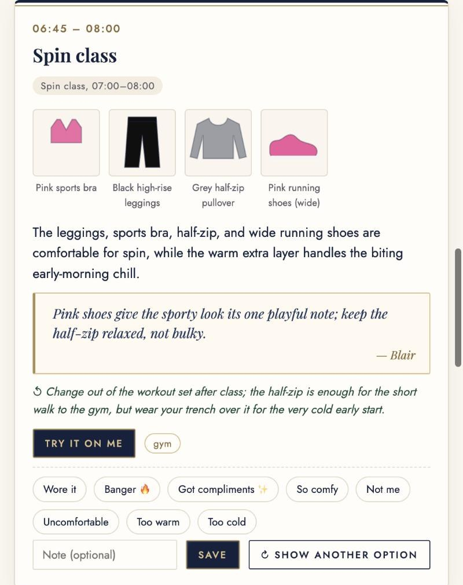

Closet Twin
- Dresses you daily: one decided outfit per part of your day, from calendar + live weather
- Learns: banger, got compliments, comfy, not me → no repeats, more of what works
- Returns teach it your size per brand
- Shops gaps in your size and budget (resale too), from Pinterest or Instagram inspiration, with price tracking
- Shows it on the real you, in 360°; a Critic checks every suggestion first

The problem
Me: an MBA day goes spin class → case discussion → recruiter coffee chat → dinner. And I wear a women's 12 wide. "Available in 12" doesn't tell me "wide, with a roomy toe, walkable all day". That lives only in the reviews.
What's new
| Exists today | What users complain about |
|---|---|
| Alta: closet, daily outfits, avatar, shopping (the closest) | Outfits "feel random", miss weather; avatar takes tries; learning is a black box |
| Daydream chat shopping · Doppl photo try-on | Don't know your closet or day; show looks, not fit |
| Indyx, Style DNA, ChatGPT | Tedious setup; wrong color reads; generic looks, wrong links |
learning you can see, rules enforced in codecompliments → repeat the formulareturns → brand size rulesfit before looks (12 wide)only cited, in-size linksinspo → outfits + gap shoppingthe real you in 360°
Ten agents, one model, code in charge
- Closet Cataloger: photo or product link → tagged item
- Day Planner:
get_calendar,get_weather+ memory → one outfit per block (+ swap) - Shopping Scout:
search_catalogorweb_search(never sees measurements) - Fit Tailor:
fit_checksize-chart math → size and zones - Style Critic: approve, or send back (max 2×)
- Recommender (closet gaps) · Inspo Stylist (screenshots, Pinterest)
- Color, Style and Body analysts: season, archetype, measurements
- Photo Try-On: daily photo + 360° on your own key
Plan: Planner → grounding check → Critic → revise?
Shop: Scout → grounding → Tailor → Critic → re-scout?
Learn: taps + returns → memory → no-repeat check after every plan
gpt-6-luna for every agent · strict JSON schemas · every call passes a ledger with budgets and a loop guard
A real day, planned

"This is classic Uptown polish with just enough glamour in the silk blouse; let the tailoring do the talking." (Blair, the stylist persona)
- Live weather + calendar → one decided outfit per block
- One tap: wore it · banger · got compliments · comfy · not me · too warm/cold
- "Not me" → another option ($0.0006); repeats within 14 days are sent back by code
- The Critic checks weather, dress code, comfort, style and truth
- Run
{{PLAN_RUN_ID}}: {{PLAN_COST}}
Try it on: the real you


Photo try-on: your photo + outfit + real place + pose, $0.023 per image · Drape test: your face (hair capped) in each season's colors, measured with MediaPipe + an open-source 12-season method · 360°: 8 angles of you, drag to turn ($0.25 once)
What it costs
- Compact closet format: 74% fewer tokens (902 vs 3,517)
- "Low" reasoning effort: 2.5× cheaper, 2.3× faster, same Critic score (4.75/5, n=4 each)
- Prompt caching, tool-result reuse, 768px photos. Caught and fixed a gateway replay that faked measurements.
Kept safe, and tested

- Prompt injection: reviews cleaned, instruction-like reviews quarantined, the rest fenced as untrusted, blocked in real runs
- Privacy: the agent that reads the web never holds measurements. Photos go out only with consent, are never committed, and have GPS stripped.
- Malfunction: code rejects invented clothes and links; the Critic can't overrule it
- Overspending: $0.05 per run (live web $0.15), $1 per day, 14-call loop guard, rate limit
- {{SAFETY_PASS}} safety checks pass (offline + live)
Impact
What's next
- Recalibrate color analysis on diverse draped faces, and learn from each drape choice
- Retailer feeds with real size charts and reviews: live shopping at catalog prices ({{FEED_COST}} per user per month)
- Prove the trust curve: does my acceptance of the first pick rise over 2–4 weeks of taps?
- A 7 a.m. "here's your outfit" notification
- Pilot with 10 classmates: time saved, Critic-versus-human agreement, returns avoided